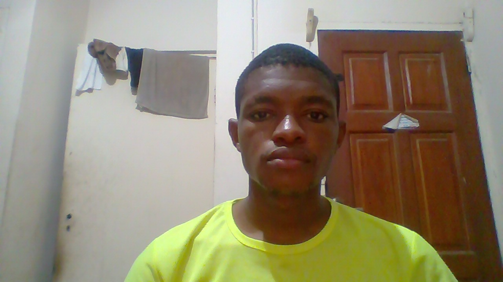

My Resume
Objective Statement
To offer solutions and services that will enhance the accomplishment of the
organization’s goals and develop myself for maximum output.
Education
- Cross River University Technology, Calabar
B.Eng. in Electrical and Electronic Engineering 2023
- National Metallurgical Training Institute, Onitsha, Anambra State.
National Diploma in Electrical Engineering 2016
- Faith International College, Kano, Kano State.
Senior School Certificate Examination (SSCE) 2012
- Faith Nursery/Primary School, Kano, Kano State.
First School Leaving Certificate (FSLC) 2004
Work Experience
Huawei Technologies Company Limited, Kano State Branch as an IT student/Intern (2016-2018)
Skills
- Team Collaboration.
- Being objective and honest under all circumstances.
- Solving problems and assessing risk.
- Being motivated, setting high standard goals, and staying on target.
